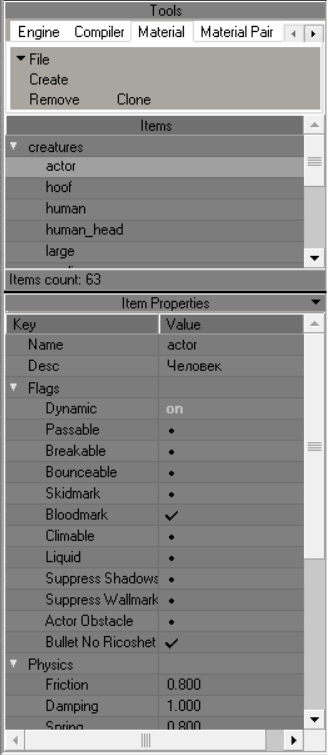
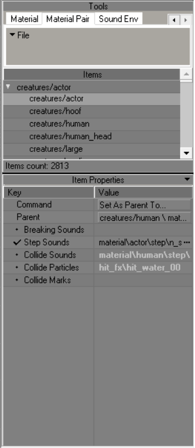
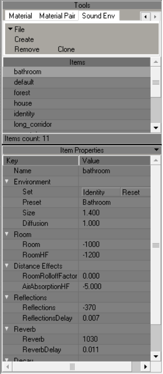

Shader Editor
Used to create/edit shaders
Interface

Tools
| Button | Description |
|---|---|
| File | Save Reload |
| Create | Create New Shader |
| Remove | Remove Selected Shaders |
| Clone | Clone Selected Shaders |
Engine Shader Parametres

Shader Types
| Name | Description |
|---|---|
| <none> | |
| EDITOR: selection | Designed to display object selection in the SDK |
| EDITOR: wire | Wireframe shader |
| INTERNAL: blur | Blur effect (dx8) |
| INTERNAL: gray-scale effect | Discoloration effect (dx8) |
| INTERNAL: lighting projecting | Lightening effect (dx8) |
| INTERNAL: shadow projecting | General shadow projection (dx8) |
| LEVEL: (lmap+env*const)*base | A type of shader with a wide range of functions. Through it you can transform ID0 textures, assign Environment map to them and customize them, with changing RGBA constants |
| LEVEL: Implicit | Designed to apply illuminance information to model geometry from light sources such as the sun (Outdated) |
| LEVEL: Implicit**detail | Designed to replace the outdated LEVEL: implicit. Allows to apply several types of detail map to the main texture, supports mask technology |
| LEVEL: detail objects | Designed for detailed objects like grass. Supports alpha channel dissolution |
| LEVEL: diffuse*base | A shader designed to apply vertex lighting to the geometry that will use it |
| LEVEL: diffuse*base.aref | A shader designed to apply vertex lighting to geometry to which alpha channel textures are assigned |
| LEVEL: lmap*(env^base) | Lightmap type of shader with a feature set such as Environment map and Alpha-Blend |
| LEVEL: lmap*base (default) | Default Lightmap shader type. This shader type is used in most of the geometry in the game. It can use tessellation |
| LEVEL: lmap*base.aref | A shader designed to apply lightmap lighting to geometry to which alpha channel textures are assigned |
| LEVEL: trees/bushes | A type of shader for flora and LOD. Supports alpha channel dissolution |
| MODEL: Default | Default shader for dynamic geometry. Supports alpha channel and tessellation |
| MODEL: env^base | Similar to LEVEL: lmap*(env^base), only for dynamic objects |
| basic (simple) | A basic shader, with a wide range of features. Supports transformation, different types of blending, adjusting the effect of lighting on it and Z-buffering. Used for most effects, such as glow |
| particles | Practically identical to basic (simple), except that it does not support a certain set of functions that are needed only for static geometry |
Owner
Your PC Name
Name
Shader Name
General
Priority
?
Strict sorting
?
Base Texture
Name
base texture for test shader?
Transform
?
Compiler Shader Parametres

Name
Shader Name
Translucency
Translucency of object with this shader
Ambient
LM density
Flags
Collision
Enable Collision for object with this shader
Rendering
An object with this shader will not render in the game world
OptimizeUV
?
Vertex Light
?
Cast Shadow
Enable shadow casting for object with this shader
Material Parametres

Name
Material Name
Desc
Material Description
Flags
Dynamic
whether the object is dynamic or not
Passable
passable material (no physical collision)
Bounceable
Enabling bounce from this material
Skidmark
whether it is possible to leave marks on this material
Bloodmark
can the material be splattered with blood
Climable
whether it is possible to climb the material
Liquid
Is the material a liquid?
Suppress Shadows
do not draw shadows on this material
Supress Wallmarks
not to draw marks on this material
Actor Obstacle
An actor's ability to collide with the material?
Bullet No Ricoshet
Will the bullet ricochet off the material
Physics
Friction
friction coefficient
Damping
softness coefficient of the material (collision energy loss)
Spring
material stiffness coefficient (spring stiffness)
Bounce start vel
initial velocity at which the bounce starts to work
Bouncing
bounce coefficient
Factors
Bounce Damage
the damage that is inflicted by bouncing?
Injurius
radiation exposure by contact
Shooting (1-went through)
material penetrability
Shooting MP (1-went through)
material penetrability in Multiplayer?
Transparency (1-full transp)
material transparency for AI
Sound occlusion (1-full hear)
attenuation factor
Flotation (1-full passable)
deceleration coefficient when passing through this material
Density Factor
how many m/s the bullet slows down when passing 1 m of material
Material Pair

Command
?
Parent
?
Breaking Sounds
Breaking Sounds
Step Sounds
Step Sounds
Collide Sounds
Collide Sounds
Collide Particles
Collide Particles
Collide Marks
Collide Marks
Sound Env

Name
Sound Environment Name
Environment
Set
Reset - Resets parameters Identity - Sets the parameters to the parameters from Identity
Preset
| Presets | Description |
|---|---|
| Alley | Alley |
| Arena | Arena |
| Auditorium | Auditorium |
| Bathroom | Bathroom (most likely a tiled room) |
| Carpet Hallway | Corridor (hallway) with carpeting (likely to affect the sound of footsteps?) |
| Cave | Cave |
| City | City |
| Concert Hall | Concert Hall |
| Dizzy | Dizzy |
| Drugged | Drugged |
| Forest | Forest |
| Generic | Generic |
| Hallway | Hallway |
| Hangar | Hangar |
| Livingroom | Livingroom |
| Mountains | Mountains |
| Padded Cell | Padded Cell |
| Parkinglot | Parkinglot |
| Plain | Plain |
| Psychotic | ? |
| Quarry | Quarry |
| Room | Room |
| Sewer Pipe | Sewer Pipe |
| Stone Corridor | Stone Corridor |
| Stone Room | Stone Room |
| Under Water | Under Water |
Size
This setting sets the perceived size of the audio environment. The larger the number, the larger and wider the environmental space will "sound"
Diffusion
Controls the master density of audio reflections and reverbrations, i.e. how thick the reverb and echo effects will be
Room
Room
This controls the initial volume level and amount of reverb and echo effects; "0" equates to full effects, while "-10000" equates to no effects
RoomHF
Sets the high frequency attenuation via a low-pass filter for Room setting and audio reflection; "0" equates to no low-pass filter, while "-10000" equates to no sound refelected
Distance Effects
RoomRolloffFactor
This setting attenuates reflected sound based on how far from the audio source the player is; the higher the value, the more a sound will decay the greater the player's distance from the source of the audio
AirAbsorptionHF
This setting attenuates high frequencies based on the distance between the player and the audio source, but simulates a denser environment. The higher the value, the less absorbent the environement is (e.g. a low value would mimic thick fog, a high value would mimic a dry desert or tundra)
Reflections
Reflections
This sets the amount of initial echoes dependant upon the Room setting. "1000" equates to maximum initial reflections, while "-10000" equates to no initial reflections
ReflectionsDelay
Sets the amount of time (in milliseconds) from the initial perception of the audio source, to the first percieved echo. The higher the value, the longer the amount of time between first hearing a sound, and hearing any echoes of that sound
Reverb
Reverb
This setting controls the amount of late reverbrations dependant upon the Room setting. "2000" equates to maxmium late reverbrations, while "-10000" equates to no late reverbrations
ReverbDelay
This sets the length of time (in milliseconds) from the initial perception of audio reflections, to the first percieved reverbration. The higher the value, the longer the amount of time between the first echo and it's resounding reverbration
Decay
DecayTime
Controls the decay time of the audio reverbration; how quickly the reverbration fades away. The smaller the value, the quicker reverbrations fade out, and the smaller the percieved room size is; the higher the value, the longer it takes for reverbrations to fade out
DecayHFRatio
Sets the ratio of high frequency reverbration decay relative to actual reverbration decay time. The higher the value, the brighter the high frequency reverbration decay; the lower the value, the more dull the high frequency reverbration